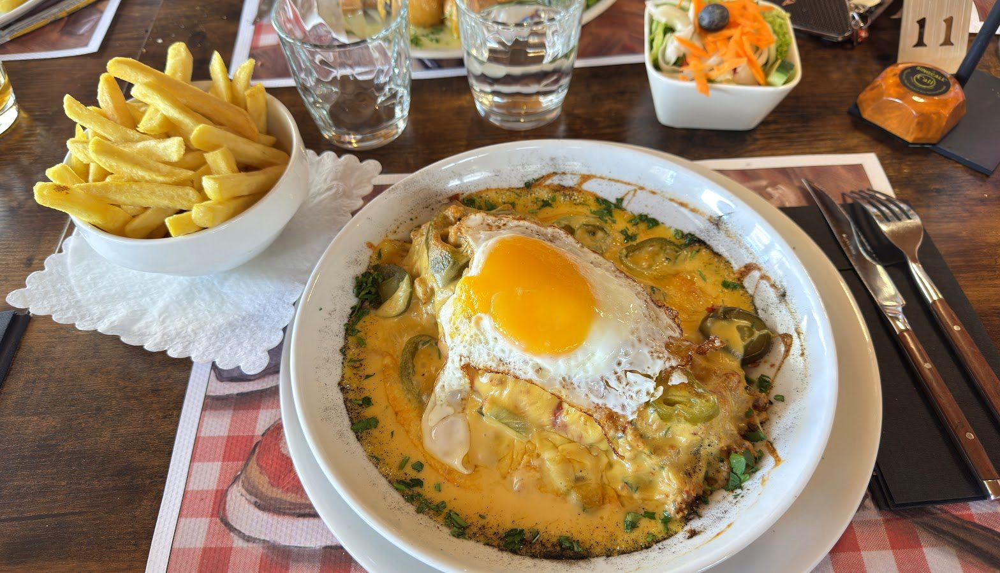

La pizzeria du village.
Une bonne pizza à pâte fine, des pâtes généreuses — au cœur du Mullerthal.
La pizza,
à pâte fine.
Une base fine et croustillante, un bord bien doré, la garniture jusqu'au bord — la pizza que le village vient chercher.
De la margherita aux fruits de mer, en passant par la pizza à l'œuf : de grandes pizzas rondes, généreuses et sans chichi, à partager sur une nappe à carreaux.
 La grande ronde
La grande ronde
Généreux, sans façon
Des pizzas rondes, des penne bien nappées, un plat qui remplit l'assiette — la cuisine simple et bonne qu'on partage.



Une salle
chaleureuse.
Un plafond de bois, une cave à vin qui veille dans un coin, des photos du Portugal au mur — et de la place autour de la table.
On y vient en voisin, en famille, entre amis, un soir de semaine comme le week-end. La pizzeria du village, tout simplement — tenue avec soin, portugaise de cœur.

Ce qu'on sert
Les pizzas et les pâtes de la maison — et de quoi contenter tout le monde autour de la table.
Les pizzas
Les pâtes
Et aussi
À emporter
Plats d'après les photos publiques de la maison, à titre indicatif. Aucun prix n'est publié ici : la carte et les prix sont à confirmer sur place.
Nous trouver
L-6210 Consdorf
horaires à confirmer
à confirmer